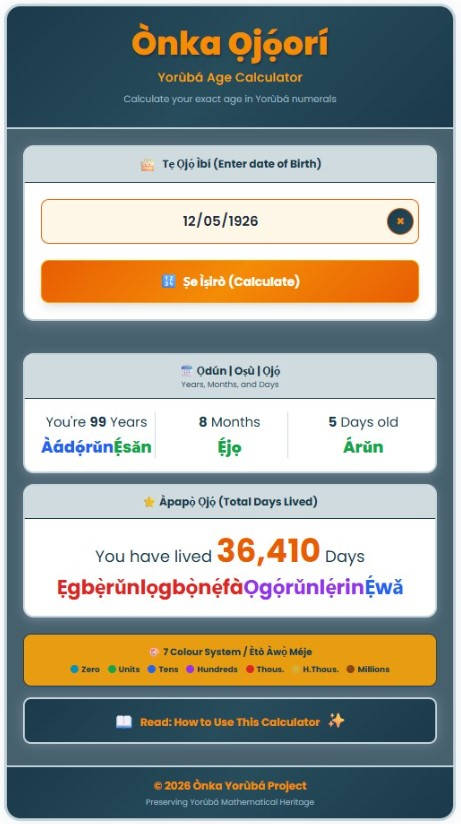

|
 |
Yorùbá Age Calculator
Welcome to the Ònka Yorùbá Digital Sanctuary where Ancient Tone Meets the Speed of Light. For too long, our ancestral tongue was told it was too rhythmic for math, too tonal for tech, and too old for the future. Today, we rewrite that narrative. We have taken the fractured fragments of our numerical heritage and forged them into a high-performance, 15-Colour Protocol designed for the age of Algorithms, Artificial Intelligence, and Global Finance. We count continuously from 1 to 10 million, with extended index up to 1Trillion, restoring what was fractured and re-awakening what was silenced. Here, numbers speak in Yorùbá again. We are rebuilding our numerical legacy with the most exhaustive Yorùbá number history ever recorded, aligning ancient intelligence with digital continuity, and calling forth a future where our mathematics governs its own destiny. What was once scattered is being gathered; what was nearly forgotten is now numbered, named, and returned to its rightful people. Whether you are a developer looking for the code of the future, a student seeking the logic of your ancestors, or a visionary ready for the New Africa—you have found your home. Discover the 10 Million Digital Scrolls before embarking on our Trillion Numerical Adventure.
|